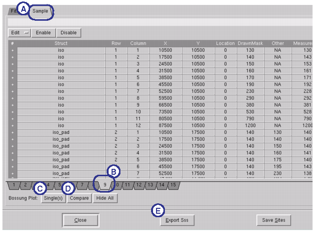
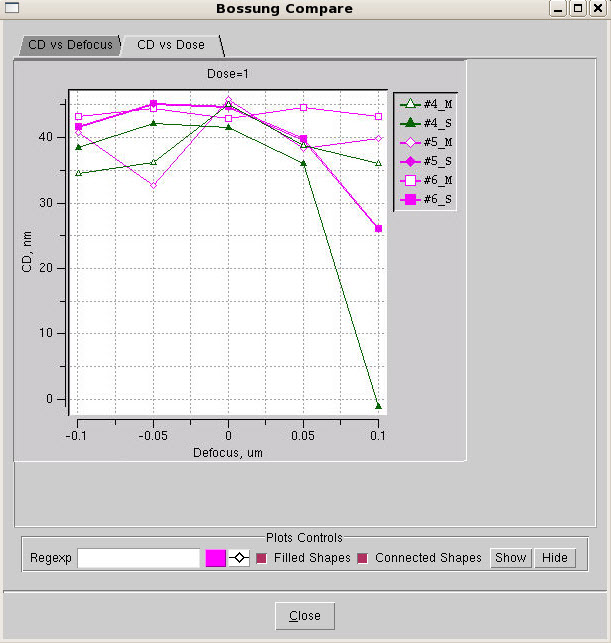

The SSS Process
Window Analysis Tool (formerly known as the Process Window analysis
tool) shows information on the super spreadsheet results. The tool accepts
the log file created by running VT5 Center with a super spreadsheet
as its input.
Procedure
- In VT5 Center, open the log
file by clicking the Open button at the bottom
of the window, and load the log file you generated in VT5 Center.
- Select the line for the log,
then click Plot. The Super Spreadsheet Process
Window Analysis Tool loads the super spreadsheet, displaying the
individual sample spreadsheets in a list on the left side, and the
dose versus focus graphs on the right.
Figure 1. Super Spreadsheet
Analysis Tool, Fitness Tab
- You can compare the sample
spreadsheets in detail by switching to the Sample tab
(A). Each of the individual sample spreadsheets is given its own
individual numbered tab (B).
Figure 2. Process Window Analysis
Tool, Sample Tab
- The following options are
available:
View any individual test
pattern structure by selecting rows. You can select multiple rows
on different tabs using Ctrl-click, and then clicking Single(s) (C
in Figure 2). You can also select
a range of rows using Shift-click. The Analysis graph (Figure 3) appears, with the selected structures
plotted.
View a side-by-side comparison
of two or more selected test structures by clicking Compare (D
in Figure 2). The Comparison Graph (Figure 4) appears with the selected structures plotted.
Figure 4. Comparison Graph